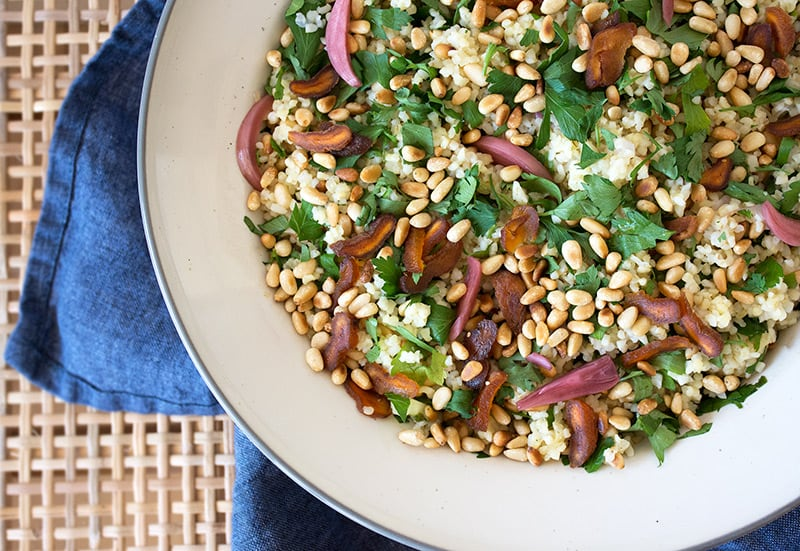
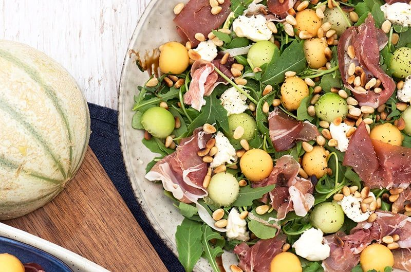
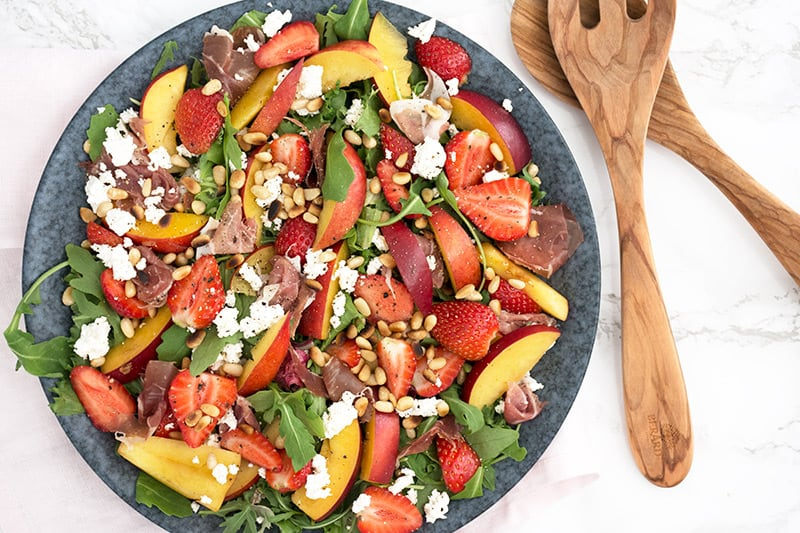

Salat med bulgur, abrikos, dadler og pinjekerner

4 pers.
Ingredienser
- 300 g bulgur, kogt
- 3 dl , vand
- 2 dl grøntsagsbouillon
- 100 g tørrede abrikoser, skåret i tynde strimler
- 2 dadler, evt medjool, skåret i tynde skiver
- 30 g pinjekerner
- 1 håndfuld bredbladet persille, finthakket
- 1 håndfuld frisk mynte, finthakket
- 2 spsk rødløg, syltede
Dressing
- 1 spsk olivenolie
- 1 citron, økologisk, saft og skal herfra
- 1 fed hvidløg, presset
- 1 tsk ingefær, fintrevet
- 1 tsk ahornsirup, eller honning
- salt
- sort peber, friskkværnet
Tid: 25 minutter
Fremgangsmåde
Bulgur
Kom bulgur, vand og grøntsagsboullion i en gryde, og lad det koge med låg på i 5-8 minutter, hvorefter varmen slukkes og det trækker i 10-15 min.
Dressing
Rør dressingen sammen og smag til
Salaten
Vend bulgur og dressing godt sammen. Anret på en tallerken eller stor skål med persille, mynte, rødløg, abrikos, dadler og rødløg.
Rist pinjerkernerne på en varm tør pande, under konstant omrøring og så snart de tager lidt farve drysses de over den lækre salat.
Melonsalat med skinke

4 pers.
Ingredienser
- 70 g rucola
- 70 g parmaskinke, eller serranoskinke
- 1/2 melon, galia
- 1/2 melon, cantaloupe
- 30 g pinjekerner, ristet på en tør pande
- 125 g frisk mozzarella
- 1 spsk balsamico glace
- 1 spsk olivenolie
- sort peber, friskkværnet
- flagesalt
Tid: 15 minutter
Fremgangsmåde
Skær alle melonkuglerne ud til fine runde kugler med et melonjern - eller alternativt, skær melon i smukke tern.
Fordel striber af olivenolie og balsamicoglace på et stort fad, vend rucolasalaten et par gange derpå.
Riv skinken i mundrette stykker og det samme med mozzarellaosten, fordel disse på rucolasalaten, anret derefter med melon og drys tilsidst sprøde pinjekerner over.
Kværn en anelse sort peber over salaten og et lille drys flagesalt inden servering.
Nektarinsalat med jordbær og feta

2 pers.
Ingredienser
- 125 g rucola
- 2 nektariner, skåret i tynde både (alternativt fersken)
- 70 g jordbær, skåret i halve
- 30 g pinjekerner, ristet
- 50 g feta
- 75 g parmaskinke, eller serrano
- flagesalt
- sort peber, friskkværnet
Dressing
- 1 spsk olivenolie
- 1 spsk hindbæreddike, eller æblecidereddike
- 1 tsk honning
- 1 tsk dijon sennep
Tid: 10 minutter
Fremgangsmåde
Dressingen
Vend alle ingredienserne sammen og smag til. Hindbæreddike eller granatæbleeddike smager vidunderligt til denne lækre salat, men alternativt kan bruges æblecidereddike eller citronsaft.
Salaten
Vend rucola med dressingen, og anret salaten på et fad eller i en skål, hvor der toppes med nektarin, jordbær, smuldret feta, pinjekerner og parmaskinke revet i mindre stykker.
Drys med flagesalt og kværn sort peber over salaten inden servering.